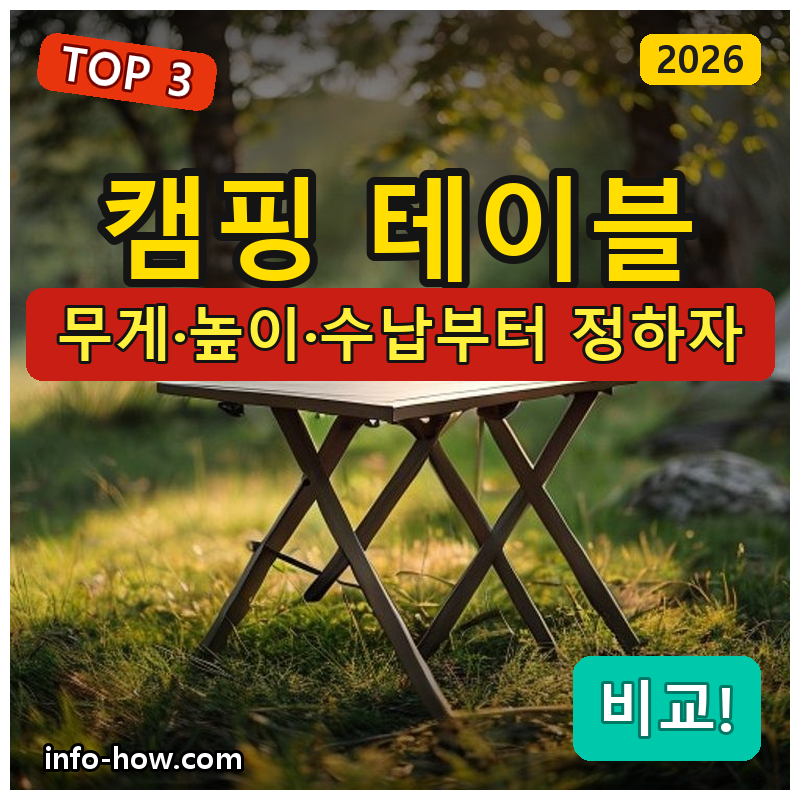
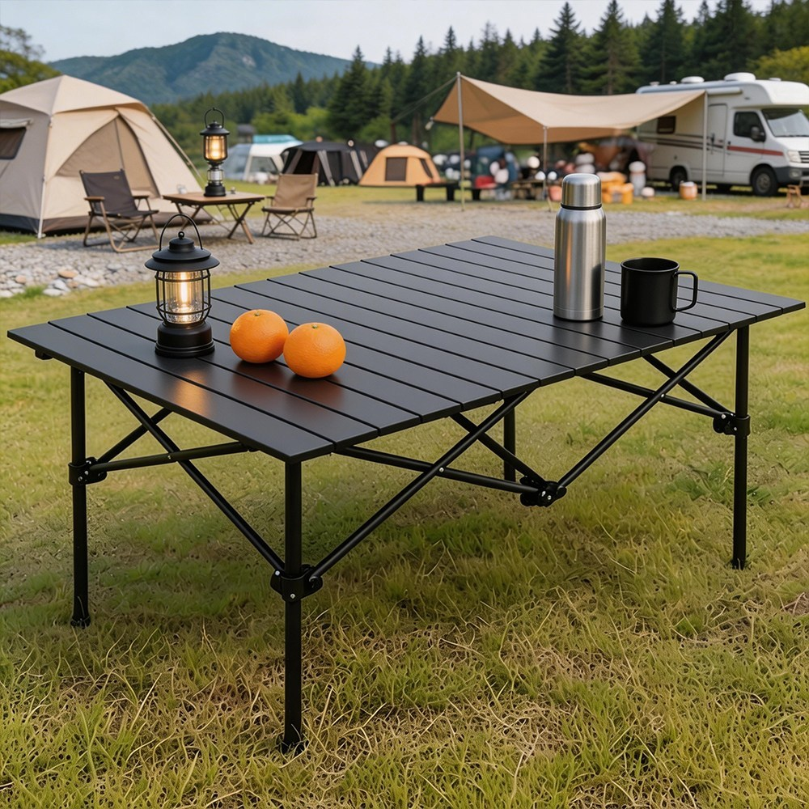
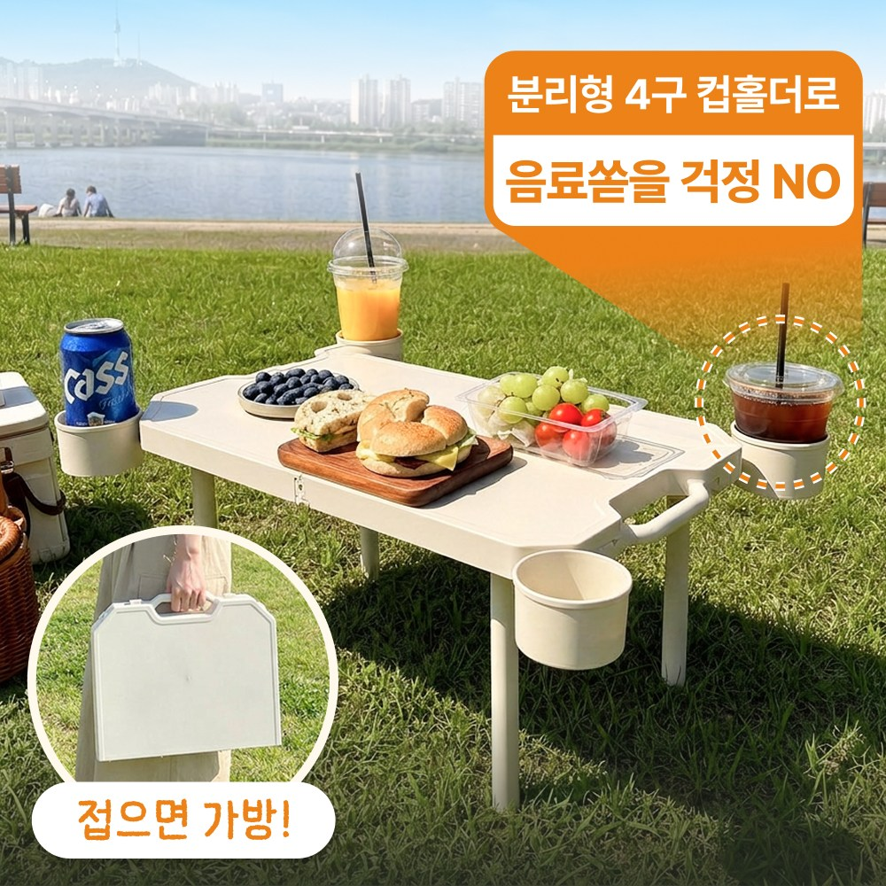
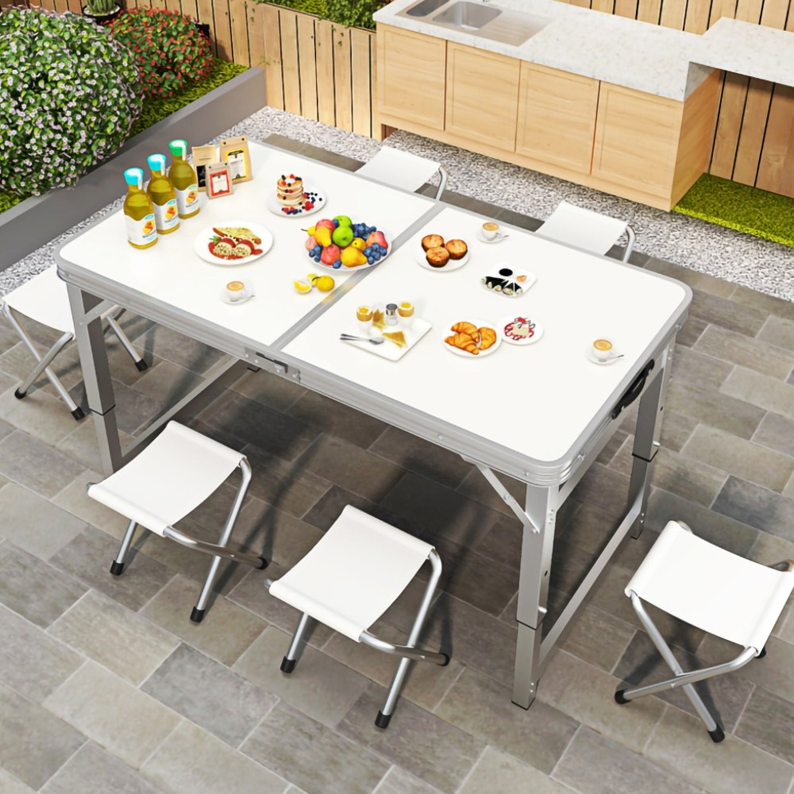

홈 › 제품리뷰 › 캠핑/레저
캠핑 테이블, 가벼운 입문 vs 컵홀더 롤테이블
작성: 생활서식 모음 · 2026-07-19

파트너스 활동의 일환으로 일정액의 수수료를 지급받습니다
🛒 오늘의 쿠팡 특가 보러가기 →
캠핑 테이블, 종류가 많아 뭘 살지 막막하죠?
핵심은 "무게와 높이, 수납·안정성" 3대 를
"가볍게 입문" "가족 오토캠핑" "좌식 감성"스타일별 정답 까지 담았으니
📋 목차
캠핑 테이블, 가벼운 입문 vs 컵홀더 롤테이블 — 결론 먼저 스펙 비교표: 한눈에 보기 캠핑 테이블 고를 때 봐야 할 4가지 백패킹이냐 오토캠핑이냐, 뭘 사야 할까? 자주 묻는 질문 (FAQ) 결론: 한 줄 요약
캠핑 테이블, 가벼운 입문 vs 컵홀더 롤테이블 — 결론 먼저
캠핑 테이블은 "무게와 스타일" 로 갈려요.바이데이 롤테이블(컵홀더) 이 무난합니다. 백패킹·가볍게 입문이면 경량 접이식으로 충분하고, 낮은 의자·좌식 감성이면 좌식 테이블입니다.
1 백패킹·입문 (가성비 초이스)
가성비

1만원대 경량 접이식
1. 모아캠프 알루미늄 접이식 캠핑 테이블
1만원대 경량 알루미늄 접어서 가방에 쏙 백패킹·피크닉 입문
넉넉하진 않아도
추천 대상
백패킹·피크닉으로 가볍게 다니는 분 접어서 부피를 줄이고 싶은 분 저렴하게 캠핑 테이블을 시작할 분 장점
1만원대 경량 알루미늄으로 부담 없이 마련 접이식이라 가방·트렁크에 부피 없이 수납 피크닉·백패킹 등 가벼운 용도에 충분 단점
이 제품은 경량·입문용 입니다. 가족 오토캠핑 넉넉함이면 2번 롤테이블, 좌식 감성이면 3번으로 가세요. "가볍게 입문"이면 가성비 최고입니다.
한줄 리뷰
"가볍게 들고 다니는 입문용"이면 경량 접이식이 딱입니다. 부피가 안 나가요. 가족용 넓은 상판·좌식이면 2·3번을 보세요.
주요 스펙
제품: 모아캠프 알루미늄 접이식 캠핑 테이블 재질: 경량 알루미늄 용도: 백패킹·피크닉·입문 배송: 로켓배송 가격: 약 16,800원 (변동 가능) ※ 실제 스펙·가격과 차이가 있을 수 있습니다
2 가족 오토캠핑 (베스트 초이스)
베스트

롤테이블·컵홀더
2. 바이데이 롤테이블 (4구 컵홀더)
넉넉한 상판 롤테이블 4구 컵홀더 = 안 넘어짐 가족 오토캠핑 실속
상판 넉넉하고 컵도 안전한
추천 대상
가족·친구와 오토캠핑으로 넉넉히 쓰는 분 컵·음료가 넘어지는 게 싫은 분 펼치고 접기 편한 롤테이블을 원하는 분 장점
상판이 넉넉해 음식·조리도구를 넉넉히 올림 4구 컵홀더로 음료가 넘어질 걱정이 적음 롤(말아서) 수납이라 펼치고 접기가 편함 단점
가볍게 백패킹이면 1번, 낮은 좌식 감성이면 3번입니다. 2번은 "넉넉함+컵홀더 안정" 의 실속 구간 — 가족 오토캠핑에 가장 무난합니다.
한줄 리뷰
"가족 오토캠핑에 넉넉하게"면 컵홀더 롤테이블이 편합니다. 컵도 안 넘어지고 상판도 넓어요. 백패킹으로 가볍게면 1번, 좌식이면 3번을 보세요.
주요 스펙
제품: 바이데이 롤테이블 (4구 컵홀더) 형태: 롤테이블(말아서 수납) · 컵홀더 용도: 가족 오토캠핑 배송: 로켓배송 가격: 약 45,800원 (변동 가능) ※ 실제 스펙·가격과 차이가 있을 수 있습니다
3 좌식 감성 (프리미엄)
프리미엄

경량 좌식 사이드
3. Ageye 경량 좌식 사이드 테이블
낮은 좌식 높이 경량 폴딩 사이드 감성 캠핑·미니멀
낮은 의자에 맞춘 좌식 높이
추천 대상
낮은 의자(로우체어) 좌식 스타일 캠핑을 하는 분 감성·미니멀한 세팅을 원하는 분 경량 사이드 테이블이 필요한 분 장점
낮은 좌식 높이라 로우체어와 눈높이가 맞음 경량 폴딩이라 휴대·세팅이 간편 미니멀 디자인으로 감성 캠핑 세팅에 어울림 단점
좌식 전용이라 입식·대형 상판을 원하면 안 맞음 가볍게 입문이면 1번, 가족 오토캠핑 넉넉함이면 2번이 합리적입니다. 3번은 낮은 의자·좌식 감성 을 원하는 분에게 어울립니다.
한줄 리뷰
"로우체어 좌식 스타일, 감성 세팅"이면 좌식 사이드 테이블이 잘 맞습니다. 낮고 경량이라 세팅이 깔끔해요. 입식·대형 상판이 필요하면 2번을 보세요.
주요 스펙
제품: Ageye 경량 좌식 사이드 폴딩 테이블 형태: 좌식(낮은 높이) · 경량 폴딩 용도: 좌식·감성 캠핑 배송: 로켓배송 가격: 약 85,000원 (변동 가능) ※ 실제 스펙·가격과 차이가 있을 수 있습니다
스펙 비교표: 한눈에 보기
가격·풍량·무게 중 본인에게 중요한 기준부터 보세요. "최고" 표시는 3제품 중 객관적 1위 값입니다.
← 좌우로 스크롤 →
캠핑 테이블 고를 때 봐야 할 4가지
무게·높이만 맞춰도 "흔들림·짐·높이 안 맞음" 실패를 막습니다.
1) 무게·수납 — 이동 방식
백패킹: 가벼운 경량 접이식이 필수오토캠핑: 무게보다 넉넉함·안정성 우선접이식/롤(말아서) 방식에 따라 수납 부피가 다름 2) 높이 — 입식 vs 좌식
입식: 일반 캠핑 의자 높이좌식(로우): 낮은 로우체어와 눈높이내 의자 높이에 맞는 테이블을 골라야 편함 3) 안정성·상판 — 흔들림·크기
다리 구조가 튼튼해야 컵·음식이 안 넘어짐 상판이 넉넉하면 조리도구·식기를 넉넉히 컵홀더가 있으면 음료 쏟을 걱정이 줄어듦 4) 상판 재질 — 열·청소
알루미늄 상판은 가볍고 뜨거운 것에 강한 편 나무·원목무늬는 감성 좋지만 관리가 필요 기름·음식물 청소가 쉬운 재질이 실용적 백패킹이냐 오토캠핑이냐, 뭘 사야 할까?
이동 방식과 스타일만 정하면 답이 나옵니다.
백패킹·가볍게: 1번 모아캠프 경량 → 1만원대가족 오토캠핑: 2번 바이데이 롤테이블 → 넉넉+컵홀더좌식 감성: 3번 Ageye 좌식 → 로우체어자주 묻는 질문 (FAQ)
Q1. 캠핑 테이블 높이는 어떻게 골라야 하나요? 함께 쓰는 의자 높이에 맞춰야 합니다. 일반 캠핑 의자를 쓰면 입식 높이 테이블이 맞고, 낮은 로우체어(좌식 스타일)를 쓰면 좌식(로우) 테이블이 눈높이에 맞아 편합니다. 의자와 테이블 높이가 안 맞으면 음식을 먹거나 조리할 때 불편하므로, 내 의자 스타일을 먼저 정하고 그에 맞는 테이블 높이를 고르세요.
Q2. 백패킹용이면 뭘 봐야 하나요? 무게와 수납 부피가 핵심입니다. 배낭에 넣고 걸어야 하므로 최대한 가볍고 접었을 때 작아지는 경량 알루미늄 접이식이 유리합니다. 넉넉함이나 컵홀더 같은 편의보다 무게를 우선하세요. 반대로 차로 이동하는 오토캠핑이면 무게 부담이 적으니 넉넉한 상판·안정성 위주로 고르면 됩니다.
Q3. 롤테이블이 뭔가요? 접이식이랑 다른가요? 상판을 말아서(롤) 수납하는 방식입니다. 상판이 여러 조각으로 나뉘어 돌돌 말리기 때문에 펼치면 넉넉한 크기가 되고 접으면 길쭉하게 수납됩니다. 넉넉한 상판과 편한 수납의 균형이 좋아 오토캠핑에서 인기입니다. 일반 접이식(반으로 접는 방식)보다 상판이 넓은 경우가 많지만 무게는 조금 더 나가는 편입니다.
Q4. 캠핑 테이블 위에 버너를 올려 요리해도 되나요? 상판 재질과 내열 여부를 확인해야 합니다. 알루미늄 상판은 열에 비교적 강하지만, 원목·플라스틱 상판은 뜨거운 냄비나 버너 열에 손상될 수 있습니다. 화기를 쓰는 조리는 화로대나 내열 테이블, 또는 별도 받침을 쓰는 것이 안전합니다. 테이블 위 직접 조리가 잦다면 내열 상판(스테인리스·전용 화로 테이블)을 고려하세요.
Q5. 흔들리지 않는 튼튼한 테이블을 고르려면? 다리 구조와 잠금 방식을 봐야 합니다. 다리가 X자 프레임이나 잠금 걸쇠로 단단히 고정되는 구조가 흔들림이 적습니다. 저가 제품 중 다리 결합이 헐거운 것은 컵이 넘어지기 쉽습니다. 실사용 후기에서 "흔들림·안정성" 언급을 확인하고, 컵홀더가 있으면 음료가 쏟아지는 것을 줄일 수 있습니다.
결론: 한 줄 요약
1) 모아캠프 경량 접이식 — 약 16,800원 / 백패킹·입문. 가볍게, 1만원대 가성비.2) 바이데이 롤테이블 — 약 45,800원 / 가족 오토캠핑. 넉넉한 상판+4구 컵홀더.3) Ageye 좌식 테이블 — 약 85,000원 / 좌식 감성. 로우체어에 맞는 낮은 높이.이 포스팅은 쿠팡 파트너스 활동의 일환으로, 이에 따른 일정액의 수수료를 제공받습니다.